R统计 常见的分布
要点: 概率函数，通常用来生成特征已知的模拟数据，以及在用户编写的统计函数中计算概率值。
[R In Action, 2nd, Chapter5.2.3][R语言与统计分析 汤银才 chapter3.3]
注意: 不同信息源在定义同一个概率时常常有细微的差异，本文讲解时都以R stats中的定义为准。
α β λ
小写 pdf, 概率密度函数(probability density function)，在不至于混淆时可以简称为密度函数。f(a)=P(X=a)。
大写 CDF, 累积分布函数(Cumulative Distribution Function)，又叫分布函数，是概率密度函数的积分，能完整描述一个实随机变量X的概率分布。定义: F(a)=P(X<=a)。
R 中相应的函数
[dpqr]distribution_abbreviation()
在R中，一般一种分布包含4个固定格式的函数，第一个字母表示其所指分布的某一方面:
d = 密度函数(density)
p = 分布函数(distribution function)
q = 分位数函数(quantile function)
r = 生成随机数(随机偏差)
Base R provides
probability distribution functions p foo (),
density functions d foo (),
quantile functions q foo (),
and random number generation r foo ()
where foo indicates the type of distribution:
beta ( foo = beta), binomial binom, Cauchy cauchy, chi-squared chisq, exponential exp, Fisher F f, gamma gamma, geometric geom, hypergeometric hyper, logistic logis, lognormal lnorm, negative binomial nbinom, normal norm, Poisson pois, Student t t, uniform unif, Weibull weibull.
Following the same naming scheme, but somewhat less standard are the following distributions in base R: probabilities of coincidences (also known as "birthday paradox") birthday (only p and q), studentized range distribution tukey (only p and q), Wilcoxon signed rank distribution signrank, Wilcoxon rank sum distribution wilcox.
离散型随机分布: 二项分布、几何分布、超几何分布、泊松分布等。
连续型随机分布: 正态分布、均匀分布、指数分布、对数正态分布、柯西分布、Gamma分布、瑞利分布、韦伯分布等。
三大抽样分布: 卡方分布、F分布、t分布。
| distribution |
R name |
distribution |
R name |
| Beta |
beta |
Lognormal 对数正态分布 |
lnorm |
| Binomial 二项分布 |
binom |
Negative Binomial 负二项分布 |
nbinom |
| Cauchy 柯西分布 |
cauchy |
Normal 正态分布 |
norm |
| Chisquare (非中心)卡方分布 |
chisq |
Poisson 泊松分布 |
pois |
| Exponential 指数分布 |
exp |
Student t |
t |
| F |
f |
Uniform 均匀分布 |
unif |
| Gamma |
gamma |
Tukey |
tukey |
| Geometric 几何分布 |
geom |
Weibull |
weib |
| Hypergeometric 超几何分布 |
hyper |
Wilcoxon |
wilcox |
| Logistic |
logis |
多项式分布 |
nultinom |
意义: 贝努里试验独立地重复n次, 则试验成功的次数服从一个参数为(n, p)的二项分布.
大白话: 袋子中白球概率是p，有放回的独立重复抽样n次为一个实验，则实验中取到白球的个数 X~binom(n, p)。
二项分布需满足以下条件：
1.每次试验只有两个结果，成功或者失败
2.试验之间相互独立
3.每次试验成功的概率p是常数
(符合前3个的试验称为伯努利实验。)
4.固定的试验次数，n
二项分布就是重复n次独立的伯努利试验。
分布律: f(x|n,p)=C(n, x) * p^x * (1-p)^(n-x); x=0,1,...,n; 其中，组合数 C(n, k) =n!/(k!(n-k)!)
二项分布的数字特征: EX=np, Var(x)=npq
#(1) 二项分布的数字特征
n=100; p=0.3; c1=c();c2=c();
for(i in 1:10000){
x=rbinom(1000, size=n, prob=p);
c1=c( c1, mean(x)-n*p )
c2=c(c2, var(x)-n*p*(1-p) )
}
hist(x, n=100)
#
hist(c1, n=100)
hist(c2, n=100)
#(2) 二项分布2个参数，p影响形状，n*p影响在x轴的位置。
x=seq(0,100)
y=dbinom(x, size=100, prob=0.05)
par(mar=c(4,4,3,8))
#坐标轴
plot(x, y, type='n', col='black', ylim=c(0, 0.2),
xlab="X", ylab='Density',main="X~binom(size, prob)")
#横的辅助新
ps2=c(0.1,0.3,0.5)
abline(h=dbinom(100*ps2, 100, ps2), lty=2, col="grey80" )
#分布曲线
ps=c(0.05, 0.1, 0.3, 0.5, 0.7, 0.9, 0.9)
colors=c('grey70','red','orange','green','blue','purple','grey50')
sizes=c( rep(100,length(ps)-1), 90)
ltys=c(2, rep(1,5),2)
for(i in 1:length(ps)){
y=dbinom(x, size=sizes[i], prob=ps[i])
lines(x, y, col=colors[i], type='o', cex=0.5, lty=ltys[i])
}
#图例
posL=par('usr')
legend(x=posL[2]*1.05,y=posL[4]*0.8, col=colors, lty=1,
bty='n', #图例不要方框
xpd=T, #显示到图外
pch=1, cex=0.8, #图例形状和整体缩放
title = 'size, p', legend =paste0( sizes,", ",ps) )
特例: n=1时的二项分布为贝努力分布。
二项分布是对称的，binom(100, 0.3) 和 binom(100, 1-0.3) 的形状是一样的，但是对称轴(n*p)不同。
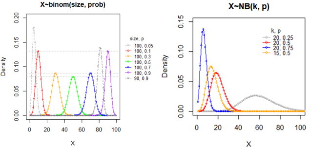
意义: 贝努里试验独立地重复进行, 一直到k次成功时停止试验，则试验失败的次数X服从一个参数为(k, p)的负二项分布.
大白话: 袋子中白球概率是p，有放回的独立重复抽样，直到取到k次白球停止，则停止前取到黑球个数 X~NB(k, p)。
分布律: f(x|k,p)=Gamma(k+x) / ( Gamma(k)*Gamma(x) ) * p^k * (1-p)^x, x=0,1,...
NB分布律: f(x|k,p)=C(k-1+x, x) * p^k * (1-p)^x; x=0,1,...
NB数字特征: EX=k(1-p)/p; Var(X)=k(1-p)/p^2;
#(1) NB数字特征
k=100;p=0.3; c1=c();c2=c();
for(i in 1:1000){
x=rnbinom(10000, k, p)
c1=c(c1, mean(x)-k*(1-p)/p)
c2=c(c2, var(x)-k*(1-p)/p^2)
}
hist(x,n=100)
#
hist(c1, n=100)
hist(c2, n=100)
#(2) 参数对NB分布的影响
x=seq(1,200); y=dnbinom(x, 20, 0.3)
plot(x,y, type='n', xlim=c(0,100), ylim=c(0,0.15),
xlab="X", ylab="Density", main="X~NB(k, p)")
ps=c(0.25, 0.5, 0.75, 0.5); n=length(ps);
sizes=c( rep(20, n-1), 15); colors=c('grey70','red','blue', 'orange');
for(i in 1:n){
y=dnbinom(x, sizes[i], ps[i])
lines(x,y, col=colors[i], type='o', cex=0.5)
}
posL=par('usr')
legend(x=posL[2]*0.6,y=posL[4]*0.9, col=colors, lty=1,
bty='n', xpd=T, pch=1, cex=0.8, title = 'k, p', legend =paste0( sizes,", ",ps) )
负二项分布，p越大，峰越靠近0，越尖；p特别小时太扁平而看不到明显的峰。
推导 nb 均值和方差的关系: mu=k(1-p)/p, 则使用mu表示p=k/(mu+k); 1-p=mu/(mu+k);
带入上式方差中 DX=Var(X)=mu + a*mu^2, 其中a=1/k;
可见 方差是均值的二次函数。方差随着均值的增加而进行二次函数形式的递增。
其中a和k被称为dispersion parameter。
负二项分布与泊松分布的关系，可以用α或k推出：(1)当 k -> ∞ 时，α -> 0，此时 σ2= μ，为泊松分布；(2)当 k -> 0 时，α -> ∞，此时overdispersion
特例: k=1时的分布为几何分布。
RNA-seq中为什么负二项分布最优？
负二项分布为什么叫这个名字？“负”从何而来？
意义: 单位时间, 单位长度, 单位面积, 单位体积中发生某一事件的次数常可以用泊松(Poisson)分布来刻划, 例如某一服务设施在一定时间内到达的人数(早上馒头店该准备多少个馒头？)，电话交换机接到呼叫的次数，汽车站台的候客人数，机器出现的故障数，自然灾害发生的次数，一块产品上的缺陷数，显微镜下单位分区内的细菌分布数，某段高速公路上一年内的交通事故数，某办公室一天中收到的电话数
一天内考研报名的人数，一个月内看知乎的人数，
可以认为近似服从泊松分布。泊松分布的参数λ是单位时间(或单位面积)内随机事件的平均发生次数。
意义: 一段时间内，某事发生的的期望是 10。分别求该事发生 1, 2, 3, ...., 19, 20 次的概率。
分布律: P(X=k)= λ^k / k! * exp(-λ); 其中 常数 λ>0 是区间事件发生率的均值, k=0,1,2,...
奇葩性质: 泊松分布的期望和方差相等 E(X)=Var(X)=λ
一种神奇的推导: 泰勒(Tailor)展开式 e^x = 1 + x + x^2/2! + x^3/3! +...+ x^k/k! + Rk, 其中k=0,1,2,...; 两边同时除以e^x，右边得到一个和为1、通项公式为 x^k/k!*exp(-x) 的数列，这很符合概率分布律的定义。这就是 泊松分布及其分布律。
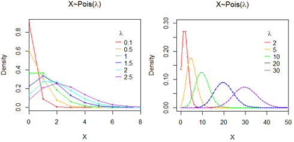
## 泊松分布
lambda=10
hist( rpois(1000, lambda), n=20 )
#数字特征
mean(rpois(1000, lambda)) #lambda
var(rpois(1000, lambda)) #lambda
###########
# 密度曲线1: lambda比较小的情况(less than 2)
colors=c('red', 'orange', 'green','blue','cyan','purple')
lambdas=c(0.1,0.5, 1,1.5,2,2.5)
n=length(lambdas)
x=0:150;
plot(NULL, xlim=c(0,8), ylim=c(0, 0.9), xaxs ='i', #不要图与坐标轴间的空白
xlab="X", ylab="Density", main= expression( paste("X~Pois(",lambda,")") ) )
for(i in 1:n ){
y=dpois(x, lambdas[i])
lines(x, y, lwd=1.5, type="o", cex=0.5, col=colors[i])
}
usr=par('usr')
legend(x=usr[2]*0.75 ,y=usr[4]*0.9 , lty=1, title = expression(lambda),bty='n',
col=colors[1:n], legend=lambdas)
###########
# 密度曲线2: lambda比较大的情况(equal or more than 2)
colors=c('red', 'orange', 'green','blue','purple')
lambdas=c(2, 5, 10, 20, 30)
n=length(lambdas)
x=0:150;
plot(NULL, xlim=c(-2,50), ylim=c(0, 0.3), xaxs ='i', #不要图与坐标轴间的空白
xlab="X", ylab="Density", main=expression( paste("X~Pois(",lambda,")") ) )
for(i in 1:n ){
y=dpois(x, lambdas[i])
lines(x,y , type="o", cex=0.4, col=colors[i])
}
usr=par('usr')
legend(x=usr[2]*0.75 ,y=usr[4]*0.9 , lty=1, title =expression(lambda), bty='n',
col=colors[1:n], legend=lambdas)
在统计学上，只要某类事件满足三个条件——小概率事件(即p很小，p^n可以小到不计)、独立(事件不会相互影响)、稳定(成功的概率不变)，它就服从"泊松分布"。
泊松分布，在基因组和进化领域神一般存在。于无限中取有限，于连续中取间断，于线段中取点。一般来说，固定时空内小概率事件的出现次数，就是符合泊松分布。抓住两个要素，“固定时空”和“小概率”。泊松分布的精髓在于无记忆性。泊松过程具有平稳、独立、增量性，更新过程的特例，参数不受时间影响。
泊松分布是二项分布n很大而p很小时的一种极限形式
二项分布是说，已知某件事情发生的概率是p，那么做n次试验，事情发生的次数就服从于二项分布。
泊松分布是指某段连续的时间内某件事情发生的次数，而且“某件事情”发生所用的时间是可以忽略的。例如，在五分钟内，电子元件遭受脉冲的次数，就服从于泊松分布。
假如你把“连续的时间”分割成无数小份，那么每个小份之间都是相互独立的。在每个很小的时间区间内，电子元件都有可能“遭受到脉冲”或者“没有遭受到脉冲”，
这就可以被认为是一个p很小的二项分布。而因为“连续的时间”被分割成无穷多份，因此n(试验次数)很大。
所以，泊松分布可以认为是二项分布的一种极限形式。
因为二项分布其实就是一个最最简单的“发生”与“不发生”的分布，它可以描述非常多的随机的自然界现象，因此其极限形式泊松分布自然也是非常有用的。
Binomial dist is common and poission is its limit. 当二项分布的n很大而p很小时，泊松分布可作为二项分布的近似，其中λ=np。
时间分为很多份，就是n，分成很多份后发生的概率p很小。
问题：为什么n要足够大，p要足够小？因为在分时间窗口的时候有个假设：每个时间窗口最多只有一次事件发生。
通常当n≧20,p≦0.05时，就可以用泊松公式近似得计算。(也有说 n≥100，np≤10近似效果较好。)。n很大p很小时，单纯的二项分布里组合数计算起来运算量相当大，而用泊松近似后，计算量会大大减少，而与二项分布算出的结果几乎没有什么差异。
当λ≥20时，泊松分布可以用正态分布来近似，当λ≥50，泊松分布基本上就等于正态分布了。
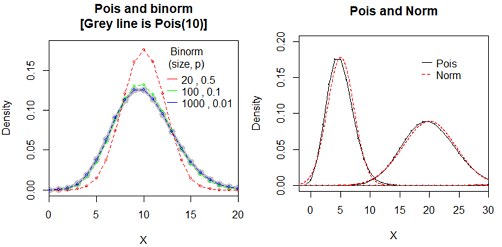
########## Pois vs Binorm
# lambda=n*p=10
# p = 0.5, n = 20 时，binom和poison的pmf不重合
# p = 0.1, n=100时，已经重合度较高
# p = 0.01, n = 1000时，几乎完全重合
colors=c('red', 'green', 'blue','purple')
ns=c(20,100,1000)
ps=c(0.5,0.1,0.01)
lambdas=ps*ns #10 10 10
n=length(lambdas)
x=0:150;
y=dpois(x, lambdas[1])
plot(x,y, xlim=c(0,20), ylim=c(0, 0.18), xaxs ='i',
type='o', col='grey', lwd=5,
xlab="X", ylab="Density", main="Pois and binorm\n[Grey line is Pois(10)]")
for(i in 1:n ){
y=dbinom(x, ns[i], ps[i])
lines(x,y , type="o", cex=0.6, lty=2, col=colors[i])
}
usr=par('usr')
legend(x=usr[2]*0.6, y=usr[4]*0.9, lty=1, title ="Binorm\n(size, p)", bty='n',
col=colors[1:n], legend=paste(ns,',', ps))
#
########## Pois vs Norm
colors=c('black', 'red')
x=-5:50;
x2=seq(-5,50,0.01)
plot(NULL,NULL, xlim=c(-2,30), ylim=c(0, 0.20), xaxs ='i',
xlab="X", ylab="Density", main="Pois and Norm")
for(lambda in c(5, 20, 50)){
# 泊松分布：离散
lines(x, dpois(x, lambda), type="o",cex=0.3, lty=1, col=colors[1])
# 正态分布：连续
lines(x2, dnorm(x2, lambda, lambda**0.5), type="l", lty=2, col=colors[2])
}
usr=par('usr')
legend(x=usr[2]*0.6, y=usr[4]*0.9, lty=c(1,2), bty='n',
col=colors, legend=c('Pois', 'Norm'))
几何分布 geom p:一次试验中事件发生的概率
意义: 努里试验独立地重复进行, 一直到出现有成功出现时停止试验, 则试验失败的次数X=k服从一个参数为p的几何分布.
分布律: f(x|p)=p*(1-p)^x, x=0,1,2,..., p取值范围是(0,1]
数字特征: E(X)=(1-p)/p; var(X)=(1-p)/p^2
本文是R语言中的几何分布的定义。也有些教科书定义为第k2次试验才成功的概率，显然k2=k+1。分布律和数字特征都需要相应调整。
# 几何分布
p=0.3
hist( rgeom(1000, p), n=20 )
#数字特征
mean(rgeom(1000, p)) #(1-p)/p
var(rgeom(1000, p)) #(1-p)/p**2
#
colors=rainbow(6)
x=1:50;
plot(NULL, xlim=c(0,30), ylim=c(0,0.25),
xlab="X", ylab="density", main="X~G(p)")
ps=seq(0.1,1,0.2)
for(i in 1:length(ps) ){
p=ps[i]
lines(x,dgeom(x,p), type="o", cex=0.5, col=colors[i])
}
legend('topright', lty=1, title = "p",
col=colors[1:length(ps)], legend=ps)
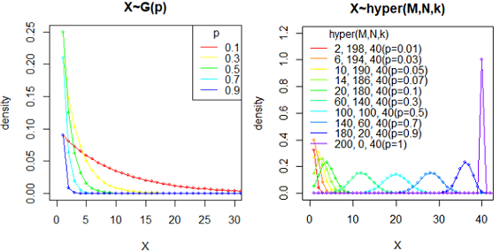
超几何分布跟二项分布的区别：抽取n个的过程中，抽得特定种类的概率会变化（因为不归还），但抽完后每个组合的发生概率是一样的。而二项分布重复n次实验，每次概率不变。
意义: 从装有M个白球和N个黑球的罐子中不放回地取出k(< N + M)个球, 则其中的白球数X=x服从超几何分布。
超几何分布：N+M中有M个特定种类，抽取k个时，会有x个特定种类的概率。
p(x) = choose(m, x) * choose(n, k-x) / choose(m+n, k), x = 0, …, k.
Note that p(x) is non-zero only for max(0, k-n) <= x <= min(k, m).
数字特征: 记p=M/(N+M); E(X)=k*p; var(X)=(N+M-k)/(N+M-1) * k*p*(1-p)
# 超几何分布
T=1000; p=0.1; k=3;
M=T*p #目标集合
N=T*(1-p) #非目标集合
hist( rhyper(1000, M,N,k), n=20 )
#数字特征
mean( rhyper(1000, M,N,k) ) #k*p
var( rhyper(1000, M,N,k) ) #(N+M-k)/(N+M-1) * k*p*(1-p)
# 密度曲线
ps=c(0.01,0.03,0.05,0.07, seq(0.1,1,0.2),1)
colors=rainbow(length(ps)*1.2)
x=1:50; T=200; k=40
plot(NULL, xlim=c(0,k+1), ylim=c(0,1.2),
xlab="X", ylab="density", main="X~hyper(M,N,k)")
for(i in 1:length(ps) ){
p=ps[i]; M=T*p; N=T*(1-p);
lines(x,dhyper(x, M,N,k), type="o", cex=0.5, col=colors[i])
}
legend('topleft', lty=1, title = "hyper(M,N,k)", bty='n',
legend=paste0( T*ps,", ",T*(1-ps), ', ', k, '(p=',ps,')' ),
col=colors[1:length(ps)] )
扩展资料
如果样本容量k=1，即从有限总体中只抽取一个个案，且恰好抽到符合要求个案的概率，那么超几何分布可以还原成二项分布。
如果数据总体的容量(N+M)无穷大，也就是将有限总体换成无限总体，此时抽中的个案放回与不放回对于总体中符合要求的个案比例都没有影响，超几何分布也可视为二项分布。
在实际应用时，只要数据总体的个案数目是样本容量的10倍以上，即(N+M)>10*k，就可用二项分布近似描述超几何分布，通过两种概率质量函数计算得到的概率几乎相同。
超几何分布在基因富集分析中的应用
Hypergeometric test are useful for enrichment analysis. 超几何分布 常用于基因富集分析。总基因集合(N+M个基因)中，某通路基因有M个，则随机取出k个基因，包含某通路的基因个数为X=x的分布。其p值就是更极端情况的概率，也就是包含某通路的基因数大于k的概率p{X>x}。如果做了多次test，还需要对p做矫正。
实例: phyper(q, m, n, k, lower.tail = TRUE, log.p = FALSE)
#pop size : 5260 总基因数
#Number of items in the pop that are classified as successes : 1998 某个通路的基因数
#
#sample size : 131 取样数量
#Number of items in the sample that are classified as successes : 62 取样中包含的某个通路的基因数
#
#To compute a hypergeometric test, is that correct?
phyper(62, 1998, 5260-1998, 131) #[1] 0.9892471
### or
#P(Observed 62 or more) = 1-P(Observed less than 62).
1 - phyper(62-1, 1998, 5260-1998, 131) #[1] 0.01697598
phyper(62-1, 1998, 5260-1998, 131,lower.tail=F) #[1] 0.01697598
#(1) 4 method to get the p value:
sum( dhyper(62:131, 1998, 5260-1998, 131) )
1-sum( dhyper(0:61, 1998, 5260-1998, 131) )
phyper(62-1, 1998, 5260-1998, 131, lower.tail=FALSE)
1-phyper(62-1, 1998, 5260-1998, 131, lower.tail=T) #0.01697598
#(2) 或者使用 fisher检验，其背后也是超几何检验，结果p值是一致的。
# 先建立列联表，按照2种标准把总体基因分类，横着为是否被取样，竖着为是否为成功样品。排列如下:
# a b
# c d
a=62; b=131-a; c=1998-a;
d=5260-131-c
5260-1998-b #also d
mt=data.frame(
'inPathway'=c(a,c),
'notInPathway'=c(b,d)
)
rownames(mt)=c('DEG', 'notDE')
mt
# inPathway notInPathway
# DEG 62 69
# notDE 1936 3193
# 默认是双端，p值较大
fisher.test(mt)$p.value #0.02857428
fisher.test(mt, alternative='two.sided')$p.value #0.02857428
# 这里需要指定是单端test，指定alternative='greater'后，p值和之前phyper计算结果一致
fisher.test(mt, alternative='greater')$p.value # 0.01697598
Note: lower.tail使用的逻辑为： if TRUE (default), probabilities are P[X ≤ x], otherwise, P[X > x].
使用 permutation test(置换检验?) 进行1万次模拟抽样，在5260个整数中随机抽样，统计小于1998的个数的分布。
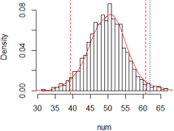
# permutation test
a1=1:5260
#
num=c()
for(i in 1:10000){ #模拟1万次
a2=sample(a1, 131) #随机抽取131个
a3=length( a2[a2<1998] ) #小于1998的个数
num=c(num, a3 )
}
hist(num, n=50, prob=TRUE)
lines(density(num), col='red')
#sd(num)
#mean(num)
abline(v=mean(num)+2*sd(num), lty=2, col='red')
abline(v=mean(num)-2*sd(num), lty=2, col='red')
#
abline(v=62, lty=3, col='blue') #62个确实在尾巴位置
# 直接计算临界值， 发现62确实超过0.05临界值，属于小概率事件
#(x-mu)/sd ~N(0,1)
qnorm( 0.95, 0, 1) * sd(num) + mean(num) #58.80205
qnorm( 0.95, mean(num), sd(num)) #58.80205
进一步阅读:
浅探富集分析中的超几何分布 |
超几何分布检验（hypergeometric test） |
Hypergeometric test (phyper) |
Hypergeometric test和fisher检验是一致的 |
意义: 泊松过程的等待时间服从指数分布。形状参数b=1的Weibull分布为指数分布。
意义: 其中λ > 0是分布的一个参数，常被称为率参数(rate parameter)，即每单位时间内发生某事件的次数。
比如，指数分布中的 λ 是每日平均卖出的馒头数，如果λ 越大，也就是说每日卖出的馒头越多，那么两个馒头之间的时间间隔必然越短。
密度函数: f(x|λ) =λ*e(-λ*x), x>=0, 常数λ>0; f(x|λ)=0, x<0; (也有教科书使用参数θ=1/λ)
x 为给定的时间。λ 为单位时间发生的次数。两次事件发生之间的时间间隔的期望为1/λ。
数字特征: EX = 1/λ; Var(X) = 1/λ^2;

比如放射性的衰变就遵循指数分布，这里的半衰期就对应1/λ。许多电子产品的寿命分布一般服从指数分布。
指数函数的一个重要特征是无记忆性（Memoryless Property，又称遗失记忆性）。
如果一个随机变量呈指数分布，当 s,t>=0时有， P(T>s+t | T>t)=P(T>s)。即，如果T是某一元件的寿命，已知元件使用了t小时，它总共还能使用至少s小时的条件概率，与从开始使用时算起它使用至少s小时的概率相等。
指数分布和几何分布都具有无记忆性。
指数分布与泊松分布之关系：
与Possion分布关注单位时间内发生的事件数目相关却相反的情形是，有时我们更关注相邻两次事件的发生间隔时间，这类事件在我们的生活中更加常见，比如超市销售两包烟之间的间隔时间、网站被访问两次的间隔时间、两只债券发生违约的间隔时间、股票两次上涨的间隔时间等。
指数分布应用广泛，在日本的工业标准和美国军用标准中，半导体器件的抽验方案都是采用指数分布。此外，指数分布还用来描述大型复杂系统（如计算机）的平均故障间隔时间MTBF的失效分布。
应用：如果一个量是由许多微小的独立随机因素影响的结果，就可以认为这个量服从正态分布。自然现象中，大量随机变量都服从或近似服从正态分布。
正态分布（Normal distribution），也称“常态分布”，又名高斯分布（Gaussian distribution）。
若随机变量X服从一个数学期望为μ、方差为σ^2的正态分布，记为N(μ，σ^2)。其概率密度函数为正态分布的期望值μ决定了其位置，其标准差σ决定了分布的幅度。当μ = 0,σ = 1时的正态分布是标准正态分布。
正态曲线呈钟型，两头低，中间高，左右对称，因其曲线呈钟形，因此人们又经常称之为钟形曲线。sd越小，峰越尖锐；sd越大，峰越扁平。
数字特征: EX=mu; var(X)=sigma^2;
x=seq(-5,5,0.1)
#画坐标系
plot(NULL, xlim=c(-5, 5), ylim=c(0,1), xlab="X", ylab="density",
main=expression( paste( N(mu, sigma^2)) ) )
sds=c(0.5, 1, 1.5, 2, 2.5, 1.5)
mus=c(0,0,0,0,0,-2)
n=length(sds)
colors=c('grey', 'red','orange','green','blue','cyan' )
# 画线
for(i in 1:n){
y=dnorm(x, mean=mus[i], sd=sds[i])
lines(x,y, type='l', cex=0.5, col=colors[i])
}
legend('topright', col=colors, lty=1,
legend=paste0("mu=",mus,', sd=',sds), bty='n')
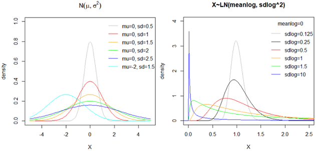
正态分布为什么常见？真正原因是中心极限定理（central limit theorem）: "多个独立统计量的和的平均值，符合正态分布。" 根据中心极限定理，如果一个事物受到多种因素的影响，不管每个因素本身是什么分布，它们加总后，结果的平均值就是正态分布。
为什么收入分布右侧有长尾，而不是对称的？因为人的收入受到的影响(比如有钱人其家庭、教育、运气、工作、人脉等)不是独立的，而是互相加强的。这些因素对结果的影响不是相加，而是相乘，那么最终结果不是正态分布，而是对数正态分布（log normal distribution），即x的对数值log(x)满足正态分布。
对数正态分布X是一种连续概率分布，其随机变量的对数ln(X)服从正态分布。或者说如果Y=ln(X)~N(mu,sigma^2)符合正态分布，则称X=exp(Y)~LN(mu, sigma^2)符合对数正态分布。其中mu和sigma不是对数正态分布的均值和标准差，而分别称它为对数均值和对数标准差。
数字特征: E(X) = exp(μ + 1/2 * σ^2); Var(X) = exp(2*μ + σ^2)*(exp(σ^2) - 1)
mu1=0.4;sig1=0.5;aa=rlnorm(100000, meanlog=mu1, sdlog=sig1)
exp(mu1 + 1/2 * sig1^2) - mean(aa) ##对数正态分布的数字特征
exp(2*mu1 + sig1^2)*(exp(sig1^2) - 1) - var(aa)
#
mean(log(aa)) #0.4 对数均值
sd(log(aa)) #0.5 对数标准差
#
hist(aa, n=100, freq = F, xlim=c(-1, 5))
hist(aa, n=100) #对数正态分布
hist(log(aa), n=100) #取对数后,符合正态分布
# 密度曲线
x=seq(-1,6,0.01)
plot(NULL, xlim=c(0,2.5), ylim=c(0,4),
main="X~LN(meanlog, sdlog^2)", xlab="X", ylab="density")
sds=c(0.125, 0.25, 0.5, 1, 1.5, 10); n=length(sds)
colors=c('grey','black', 'red', 'orange', 'green', 'blue')
#
for(i in 1:n){
y=dlnorm(x, meanlog = 0, sdlog = sds[i])
lines(x,y,type="l", col=colors[i])
}
legend('topright', col=colors, lty=1, bty='n', title="meanlog=0",
legend=paste0( "sdlog=", sds ))
问题: 对数正态分布的数字特征和 对应的正态分布的数字特征之间的关系？
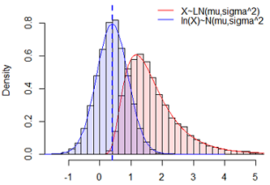
x=seq(0.01,100,0.01);
mu=0.4; sigma=0.5;
y=dlnorm(x, meanlog = mu, sdlog = sigma)
plot(x,y,type="l", lty=2, col='red', xlim=c(-1.5,4)) # 对数正态分布
lines(log(x), y, type="l", col="blue") #!! 这样搞错误，因为x均匀分布。我们要操作随机变量！
######### 重新画图:
#其随机变量的对数服从正态分布，要先模拟出随机变量X，然后再看ln(X)的分布
set.seed(20200629)
aa=rlnorm(10000, meanlog=mu, sdlog=sigma)
hist(aa, n=40, freq=F, col="#FF000022",
xlim=c(-1.5,5), ylim=c(0,0.9), xlab="X",main="") #随机变量的分布
lines(x,y,type="l", col='red') #X~LN(mu, sigma^2) #参数生成的概率密度曲线
# ln(X)~LN(mu, sigma^2)
hist( log(aa), n=20, freq=F, col="#0000FF22", add=TRUE) #随机变量的分布
x1=seq(-3,4,0.1); y1=dnorm(x1, mean=mu, sd=sigma )
lines(x1, y1, col="blue", lwd=1) #参数生成的概率密度曲线
abline(v=mu, col='blue', lty=2, lwd=2)
#
legend('topright', lty=1, col=c('red','blue'), bty="n",
legend=c("X~LN(mu,sigma^2)", "ln(X)~N(mu,sigma^2)"))
由以上模拟来看，X~LN(mu,sigma^2) 和 ln(X)~N(mu,sigma^2) 的参数完全相等。
意义: (1)“gamma分布，表示等到n个随机事件都发生，需要的时间。”(2)k个相互独立的参数为1/b的指数分布的和服从参数为(k,b)的伽玛分布。
伽马分布 gamma(a,b) 有两个参数，a代表形状(shape parameter)，b代表尺度(scale parameter)
密度函数: 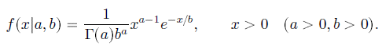
数字特征: EX=a*b; Var(X)=a*b*b;所以 alpha=Mean^2/Variance, beta=Variance/Mean
dgamma(x, shape, rate = 1, scale = 1/rate, log = FALSE); 默认第三个参数是rate，要特别指定scale参数。
a=2;b=0.5; d1=rgamma(100000, shape=a, scale=b);hist(d1)
m1=mean(d1);m1 #[1] 1.000316
s1=var(d1);s1 #[1] 0.5022628
#
a*b #m1 1
a*b*b #s1 0.5
alpha （一般为整数）代表一件事发生的次数；beta代表它发生一次的概率（或者叫速率）。那么gamma 分布就代表这么一件事发生alpha 次所需要时间的分布。
特例: alpha=1时是指数分布; a=n/2, b=2 时的分布为卡方分布。
可以使用Gamma分布描述位点的进化速度。当alpha > 1时，分布呈钟形，表示大部分位点的进化速率位于均值附近，趋于一致；当alpha <= 1时，分布为一个高度倾斜的L形，表示大部分位点的进化速率非常低，只有少部分位点属于进化的热点。一般情况下，对于真实的多序列比对数据，不同位点其碱基替换率是不一致的，推荐设置alpha = 0.5。
冗余系统（standby redundant system）
假设有一个系统有个部件，但实际需要的只有一个（其余的是备用）。当一个部件失效时，另一个自动接管。因此，只有当所有个部件都失效时，系统才会崩溃。在一定假设下，Gamma分布可以用来描述这样一个系统的寿命。
#step1 产生服从伽马分布gamma(2,1)的数据。
x = seq(0,6,length.out=100)
y = dgamma(x,2,scale=1)
#step2 采用plot函数~绘制gamma分布函数图的第一条曲线。
plot(x, y, main="the Gamma Density Distribution",
ylab="PDF", xlim = c(0,6), ylim = c(0,1), col = "red", type="l", lwd=2)
#绘制第一个gamma分布函数图，增加键值，使图形变得美观。
#step3 为了观察参数不同时gamma分布的密度函数，采用lines函数。
lines(x,dgamma(x,1,scale=0.5),col="grey",lwd=2)
lines(x,dgamma(x,1.5,scale=0.5),col="orange",lwd=2)
lines(x,dgamma(x,2,scale=0.5),col="blue",lwd=2)
# step4 图例
color2=c("red","gray","orange","blue");
legend(x=3.5,y=0.9, bty="n",
legend = paste0("α=", c(2,1,1.5,2), ", β=" , c(1,0.5,0.5,0.5)) ,
lwd = 2, col = color2)
# step5 增加图注
text(2,0.3,"gamma(2,β=1)",pos=4,cex=0.9, col=color2[1])
text(0.3,1,"gamma(1,β=0.5)",pos=4,cex=0.9, col=color2[2])
text(0.6,0.8,"gamma(1.5,β=0.5)",pos=4,offset=-0.05,cex=0.9, col=color2[3])
text(1,0.5,"gamma(2,β=0.5)",pos=4,cex=0.9, col=color2[4])
#http://blog.sina.com.cn/s/blog_c1e323d40102wyg3.html 原文用rate，本文改为beta/scale
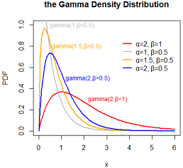
gamma分布参数有点多，又有积分，公式上看起来挺复杂，和其他很多分布有着千丝万缕的联系，比如指数分布、泊松分布、正态分布、对数正态分布。
可以脑洞大开地想: 伽玛分布=指数分布＊泊松分布。看看pdf的表达式，自己换一个写法就会发现伽玛把exponential和poisson的公式揉到一起了。
延伸阅读:
神奇的伽玛函数(上),
(下).
意义: 随机变量X与Y 独立, X服从标准正态分布, Y 服从自由度为n卡方分布, 则 T=X/sqrt(Y/n) 服从自由度为n的t分布.
密度函数: f(x|n)=(1+x^2/n)^(-(n+1)/2) * Gam( (n+1)/2 ) / ( sqrt(n*PI) * Gam(n/2) );
数字特征: EX=0; Var(X)=n/(n-2), n>2;
# Display the Student's t distributions with various
# degrees of freedom and compare to the normal distribution
x = seq(-4, 4, length=100)
hx = dnorm(x)
degf = c(1, 3, 8, 30)
colors = c("red", "blue", "darkgreen", "gold", "black")
labels = c("df=1", "df=3", "df=8", "df=30", "normal")
plot(x, hx, type="l", lty=2, xlab="x value",
ylab="Density", main="Comparison of t Distributions")
for (i in 1:4){
lines(x, dt(x,degf[i]), lwd=2, col=colors[i])
}
legend("topright", inset=.05, title="Distributions",
bty="n", #不要图例边框
labels, lwd=2, lty=c(1, 1, 1, 1, 2), col=colors)
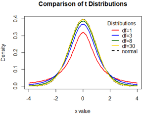
t分布比着正态分布扁平，但是随着df的增大而变尖，df=30时接近正态分布。
柯西分布的期望与方差都不存在。
下图目的: 1) 证明t(1)和cauchy(0, 1)等价; 2) 黄线证明t分布密度函数和t(1)是一致的。
x = seq(-5, 5, length=100)
#(1) 正态分布N(0,1)
plot(x, dnorm(x), type="l", col='grey60', lty=2, lwd=2, xlab="X",
ylab="Density", main="t(1) == cauchy(0, 1)")
#(2) 自由度为1的t分布
lines(x, dt(x, 1), lwd=1, col='red')
#(3) 柯西分布(0,1)就是df=1的t分布
f1=function(x){
PI=3.1415926535897932
1/(1+x^2)/PI #t分布的解析式
}
lines(x, f1(x), lty=3, lwd=4, col='blue')
#(4) t分布的密度函数
f2=function(x, df){
PI=3.1415926535897932
Gam=function(x){ gamma(x) }
n=df
(1+x^2/n)^(-(n+1)/2) * Gam( (n+1)/2 ) / ( sqrt(n*PI) * Gam(n/2) )
}
lines(x, f2(x,1), lty=1, lwd=5, col='#F0FF0055')
#(5) 图例
legend('topleft', lty=c(3,1,2,1), lwd=c(4,1,2,5), bty='n',
col=c('blue', 'red', 'grey60', '#F0FF0055'), #title="Distribution",
legend=c('cauchy(0, 1)','t(df=1)','N(0,1)', 't(1)_fn'))
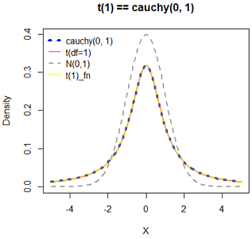
> Probability Plots
https://www.statmethods.net/advgraphs/probability.html
> CRAN Task View: Probability Distributions
https://cran.r-project.org/web/views/Distributions.html
> Distributions in the stats package
https://stat.ethz.ch/R-manual/R-devel/library/stats/html/Distributions.html
> 6 Common Probability Distributions every data science professional should know
https://www.analyticsvidhya.com/blog/2017/09/6-probability-distributions-data-science/
> Probability distributions in R
https://www.r-bloggers.com/probability-distributions-in-r/
> Distribution is all you need
https://baijiahao.baidu.com/s?id=1645256431232755893&wfr=spider&for=pc
项目地址：https://github.com/graykode/distribution-is-all-you-need
> 各种分布之间的关系
https://www.zhihu.com/question/34866983
> Gamma Distribution in R
https://statisticsglobe.com/gamma-distribution-in-r-dgamma-pgamma-qgamma-rgamma
https://www.tutorialspoint.com/statistics/gamma_distribution.htm
> 数理统计中的估计问题
http://blog.sina.com.cn/s/blog_c1e323d40102x1rl.html
## pdf
> Table of Common Distributions
http://www.stat.tamu.edu/~twehrly/611/distab.pdf
> 几种常见的分布
https://wenku.baidu.com/view/ab59abb8c77da26925c5b0a3.html
> FITTING DISTRIBUTIONS WITH R
http://www.pitt.edu/~super1/ResearchMethods/Ricci-distributions-en.pdf